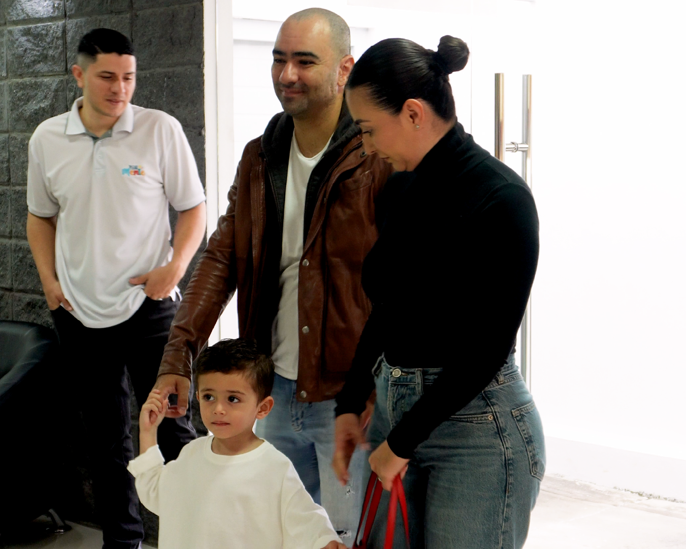
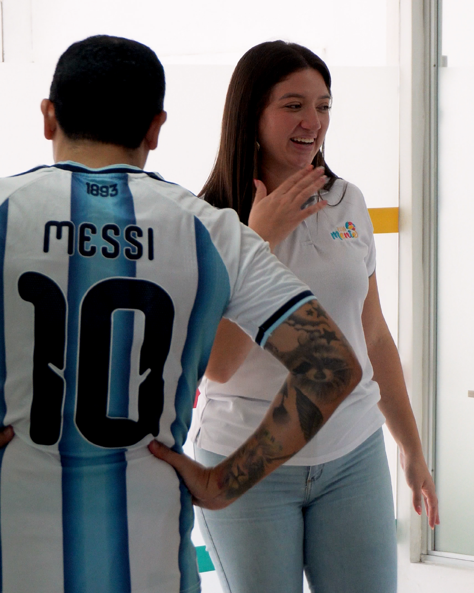

Acompañamiento Familiar
En PlenaMente entendemos que acompañar a un niño también significa acompañar a quienes forman parte de su entorno.
Por eso ofrecemos espacios de acompañamiento y orientación familiar para diferentes situaciones relacionadas con el desarrollo y la experiencia escolar de los niños y niñas.

Podemos acompañar a las familias en procesos como:
- Adaptación a nuevos espacios educativos.
- Ingreso o transición a centros educativos.
- Cambios de institución o de grupo.
- Procesos de adaptación escolar.
- Dificultades relacionadas con rutinas y hábitos.
- Acompañamiento ante diferentes retos dentro del contexto educativo.
- Orientación a las familias sobre estrategias para favorecer el aprendizaje y desarrollo en casa.
- Seguimiento de procesos individuales.
- Comunicación y articulación entre familia y centro educativo.

Este acompañamiento busca brindar a las familias herramientas, orientación y estrategias prácticas, respetando siempre las características particulares de cada niño y evitando abordajes estandarizados.
Una propuesta que acompaña cada etapa.